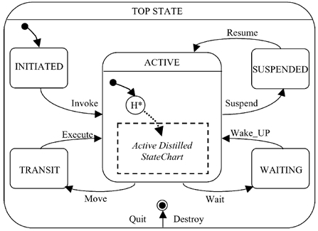
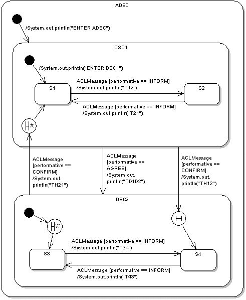
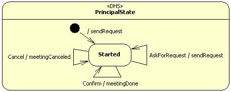
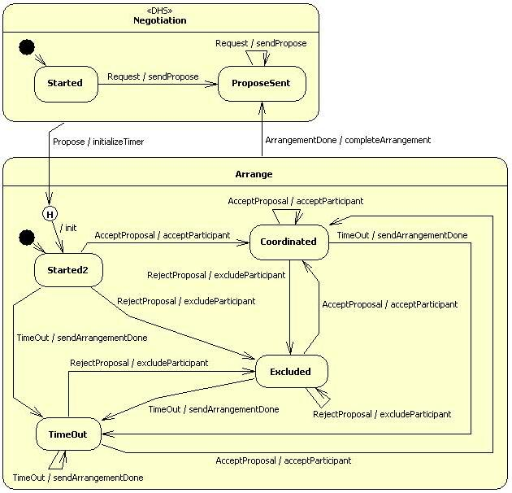

DistilledStateChartBehaviour User's Guide
v 01-10-2010
Copyright (C) 2010 G. Fortino, F. Rango
Index
The DistilledStateChartBehaviour is a new JADE behaviour that allows defining the agent behaviour through a particular hierarchical state machine called "Distilled StateChart (DSC)". DSCs are obtained from the famous Statecharts formalism (Harel 1987) as follows to model the agent behaviour as a set of consistent states and transitions, driven by events, to which specific actions are associated:
- DERIVING PROCESS: DSCs derive the following characteristics from Statecharts:
- CONSTRAINING PROCESS: DSCs impose the following constraints:
- AUGMENTATION PROCESS: DSCs augment Statecharts with the following features:
A DSC-based agent behaviour relies on an enhanced basic template built according to the FIPA agent lifecycle which JADE agents are compliant with (see Figure 1). In particular, the ACTIVE state is always entered through a deep history pseudo-state (H*) to restore the agent execution state after agent migration and, in general, after agent suspension. The ACTIVE state contains the Active Distilled StateChart (ADSC) state to which the deep history entrance of H* points. The agent behaviour can be obtained by defining the ADSC.

Figure 1. DSC template.
JADE already provides the FSMBehaviour for the modeling of agent behaviours based on finite state machines (FSMs). However their programming is not flexible as they are not based on ECA (Event-Condition-Action)-rule based transitions, and do not provide important mechanisms for reducing behaviour complexity such as well structured OR-decomposition and history entrances. In fact, the FSMBehaviour model essentially only permits flat state machines. The HSMBehaviour model extends the JADE CompositeBehaviour and provides a hierarchical state machine driven by ECA rules. However, it does not support shallow and deep history entrance mechanisms, useful for reducing behaviour complexity even further and for transparently archiving agent states. Therefore, the DistilledStateChartBehaviour has been developed by enhancing the HSMBehaviour and providing especially history entrance mechanisms.
2. Installation, compilation and other operations
To install this JADE add-on, do the following operations:
To compile this JADE add-on or generate the JAR/JAVADOC/distribution ZIP file, do the following operations:
We have used JDK 1.6.0, ANT 1.7.0 and JADE 4.0.1.
The DistilledStateChartBehaviour has also been extensively tested with JADE 3.6.1 and probably it works with many other JADE versions.
Here we explain the function of the add-on directories:
The DistilledStateChartBehaviour class represents a behaviour built according with the DSC characteristics: it extends the JADE CompositeBehaviour class and manages a set of simple or composite sub-states. The simple sub-states can be represented through any JADE behaviour, while the composite sub-states must be of type DistilledStateChartBehaviour.
Naturally, the DSC has a current state and you can indicate the initial state and the final states. The methods used to add a normal, initial or final state into the DSC are respectively addState, addInitialState and addFinalState. Hierarchy is created well into a DSC by simply adding a DistilledStateChartBehaviour state to an existing DistilledStateChartBehaviour.
The DistilledStateChartBehaviour invokes the action method of the current state and terminates when a final state is reached and its done method returns true. The current state is changed when a transition is executed.
To set the default deep/shallow history entrances of a composite state you must respectively use setDefaultDeepHistoryEntrance and setDefaultShallowHistoryEntrance methods of DistilledStateChartBehaviour. You can also define an initial state of type H or H* respectively through the operations addInitialState(DistilledStateChartTransition.SHALLOW_HISTORY) and addInitialState(DistilledStateChartTransition.DEEP_HISTORY).
To define an action associated at the default entrance of the DistilledStateChartBehaviour (to execute when we enter the DistilledStateChartBehaviour and we have to restart from its initial state) you must override the initialAction method of DistilledStateChartBehaviour. In similar way, to define an action associated at the default deep/shallow history entrance you must override respectively the defaultDeepHistoryEntranceAction and defaultShallowHistoryEntranceAction methods of DistilledStateChartBehaviour.
To respect the DSC template shown in Figure 1 you must create the root DistilledStateChartBehaviour through the createRootForDSCTemplate static method of DistilledStateChartBehaviour: it receives as parameter the user defined DistilledStateChartBehaviour corresponding to the ADSC state of the DSC template and returns the root that has the deep history pseudo-state of the ACTIVE state as initial state and the default deep history entrance set to the user defined DistilledStateChartBehaviour passed as parameter. Naturally, the addBehaviour method of the agent must receive as parameter exactly the root returned by the createRootForDSCTemplate method.
4. Events and transitions programming
An event can be represented as an ACLMessage, since the DistilledStateChartBehaviour uses the JADE messages queue.
The DistilledStateChartTransition represents a generic transition, that can be added to a DistilledStateChartBehaviour through the addTransition(DistilledStateChartTransition trans, Behaviour source) method, where the parameters represent respectively the transition to add and the source state of this transition. The addTransition method can be invoked on the DistilledStateChartBehaviour that contains the source state of the transition or it can be invoked on the root DistilledStateChartBehaviour. The trigger(Behaviour source, ACLMessage msg) method works as trigger and guard of the transition (the parameters represent respectively the source state of the transition and the event to check) and the action(ACLMessage msg) method represents the action of the transition (the parameter indicates the event that caused the transition to fire). Both these methods should be overridden by the user to define respectively trigger and action of the transition. If the trigger method returns true, the transition can be executed, then the action method of the transition is invoked and the transition to the destination state is executed.
The DistilledStateChartPerformativeTransition and DistilledStateChartTemplateTransition classes extend DistilledStateChartTransition providing a new version of the trigger method that allows to check respectively if the received event respects a given performative or a given MessageTemplate.
It's possible to indicate that a transition uses history (deep or shallow) for its destination state; i.e. we indicate as destination state the composite state that contains the history pseudo-state (H or H*) to which points the transition. The DistilledStateChartTransition.DEEP_HISTORY constant indicates that we use the deep history, instead the DistilledStateChartTransition.SHALLOW_HISTORY indicates that we use the shallow history.
To search a valid transition to fire, initially the transitions related to the current state are checked to see if any of their triggers are true. If not, the transitions related to the parent states are checked until the root is reached. If no transition can fire, the event is removed or inserted again into the messages queue referring to the chosen event handling politics. You can choose the event handling politics through the following parameters passed to the DistilledStateChartBehaviour constructor:
You have to set these parameters very carefully referring to the specific case, but probably in the majority of cases the better event handling politics is that with putbackMessage = false and assigned mainTemplate (if the received event not allows to execute a transition, it's removed and we know that it isn't needed by any other behaviour).
Now we consider the DSC shown in Figure 2.

Figure 2. Programming example.
To create this DSC, we have to write the following Java code inside a JADE agent:
// 1. Create composite states, eventually indicating the initial action
DistilledStateChartBehaviour adsc = new DistilledStateChartBehaviour(this, "ADSC", MessageTemplate.MatchConversationId("DistilledStateChartBehaviour"), false){
public void initialAction(){
System.out.println("ENTER ADSC");
}
};
DistilledStateChartBehaviour dsc1 = new DistilledStateChartBehaviour(this, "DSC1", MessageTemplate.MatchConversationId("DistilledStateChartBehaviour"), false){
public void initialAction(){
System.out.println("ENTER DSC1");
}
};
DistilledStateChartBehaviour dsc2 = new DistilledStateChartBehaviour(this, "DSC2", MessageTemplate.MatchConversationId("DistilledStateChartBehaviour"), false);
// 2. Create "empty" simple states
Behaviour s1 = new SimpleStateBehaviour(this, "S1");
Behaviour s2 = new SimpleStateBehaviour(this, "S2");
Behaviour s3 = new SimpleStateBehaviour(this, "S3");
Behaviour s4 = new SimpleStateBehaviour(this, "S4");
// 3. Add sub-states and set the "Default Deep/Shallow History Entrance"
adsc.addInitialState(dsc1);
adsc.addState(dsc2);
dsc1.addInitialState(s1);
dsc1.addState(s2);
dsc1.setDefaultDeepHistoryEntrance(s1);
dsc2.addInitialState(DistilledStateChartTransition.DEEP_HISTORY);
dsc2.addState(s3);
dsc2.addState(s4);
dsc2.setDefaultDeepHistoryEntrance(s3);
dsc2.setDefaultShallowHistoryEntrance(s4);
// 4. Create transitions
DistilledStateChartTransition t12 = new DistilledStateChartTransition("T12", s2){
public boolean trigger(Behaviour source, ACLMessage msg) {
if (msg != null && msg.getPerformative() == ACLMessage.INFORM) {
return true;
}
return false;
}
public void action(ACLMessage msg){
System.out.println("T12");
}
};
DistilledStateChartTransition t21 = new DistilledStateChartTransition("T21", s1){
public boolean trigger(Behaviour source, ACLMessage msg) {
if (msg != null && msg.getPerformative() == ACLMessage.INFORM) {
return true;
}
return false;
}
public void action(ACLMessage msg){
System.out.println("T21");
}
};
DistilledStateChartTransition t34 = new DistilledStateChartTransition("T34", s4){
public boolean trigger(Behaviour source, ACLMessage msg) {
if (msg != null && msg.getPerformative() == ACLMessage.INFORM) {
return true;
}
return false;
}
public void action(ACLMessage msg){
System.out.println("T34");
}
};
DistilledStateChartTransition t43 = new DistilledStateChartTransition("T43", s3){
public boolean trigger(Behaviour source, ACLMessage msg) {
if (msg != null && msg.getPerformative() == ACLMessage.INFORM) {
return true;
}
return false;
}
public void action(ACLMessage msg){
System.out.println("T43");
}
};
DistilledStateChartTransition td1d2 = new DistilledStateChartTransition("TD1D2", dsc2){
public boolean trigger(Behaviour source, ACLMessage msg) {
if (msg != null && msg.getPerformative() == ACLMessage.AGREE) {
return true;
}
return false;
}
public void action(ACLMessage msg){
System.out.println("TD1D2");
}
};
DistilledStateChartTransition th21 = new DistilledStateChartTransition("TH21", dsc1, DistilledStateChartTransition.DEEP_HISTORY){
public boolean trigger(Behaviour source, ACLMessage msg) {
if (msg != null && msg.getPerformative() == ACLMessage.CONFIRM) {
return true;
}
return false;
}
public void action(ACLMessage msg){
System.out.println("TH21");
}
};
DistilledStateChartTransition th12 = new DistilledStateChartTransition("TH12", dsc2, DistilledStateChartTransition.SHALLOW_HISTORY){
public boolean trigger(Behaviour source, ACLMessage msg) {
if (msg != null && msg.getPerformative() == ACLMessage.CONFIRM) {
return true;
}
return false;
}
public void action(ACLMessage msg){
System.out.println("TH12");
}
};
// 5. Add transitions
adsc.addTransition(t12, s1);
adsc.addTransition(t21, s2);
adsc.addTransition(t34, s3);
adsc.addTransition(t43, s4);
adsc.addTransition(td1d2, dsc1);
adsc.addTransition(th21, dsc2);
adsc.addTransition(th12, dsc1);
// 6. Create the root according with the DSC template
DistilledStateChartBehaviour root = DistilledStateChartBehaviour.createRootForDSCTemplate(adsc);
// 7. Activate the root
addBehaviour(root);
Where the SimpleStateBehaviour class represents the "empty" simple states of the DSC (without entry/exit actions and action method with empty body):
public class SimpleStateBehaviour extends Behaviour {
private Agent myAgent;
public SimpleStateBehaviour(Agent anAgent, String aName) {
super(anAgent);
this.myAgent = anAgent;
setBehaviourName(aName);
}
public void action() {}
public boolean done() { return true; }
}
The done method of SimpleStateBehaviour immediately returns true, because the simple states behaviour doesn't have to execute any action and immediately terminates.
As we can see, through the parameters passed to the DistilledStateChartBehaviour constructor we have chosen the event handling politics with putbackMessage = false and assigned mainTemplate. In fact, this should be the better event handling politics in the majority of cases: the DSC receives and uses only the messages that respect the assigned mainTemplate and discards the useless messages (that not allow to execute any transition); i.e., in our case, the DSC receives and uses only the messages that have their conversation-id field set to the value “DistilledStateChartBehaviour”. Therefore, when we send a message to this DSC, we have to set its conversation-id field to the value “DistilledStateChartBehaviour” like the following example:
ACLMessage msg = new ACLMessage( ... );
msg.setConversationId("DistilledStateChartBehaviour"); //set conversation-id field
msg.addReceiver( ... );
msg.setSender( ... );
send(msg);
Into the different DistilledStateChartBehaviour, the initialAction method is used to specify the initial action.
In Figure 2, the transitions that depart from a history pseudo-state and reach a given state indicate that this state represents the default deep/shallow history entrance, which is set through the setDefaultDeepHistoryEntrance and setDefaultShallowHistoryEntrance methods into the code. The default deep/shallow history entrance indicates the sub-state to reach in absence of history memory: for example, if we want to enter with shallow history the DSC2 composite state through the TH12 transition, but this state has never been visited before, the sub-state of DSC2 indicated as default shallow history entrance (i.e. S4) is reached.
As it regards the DSC2 state, it's possible to see another particularity: to indicate that its initial state is the H* history pseudo-state is effected the addInitialState(DistilledStateChartTransition.DEEP_HISTORY) operation.
The transitions guard is specified through the trigger method, while the action method indicates the action associated to the transition. Moreover, each transition has a name (like each state).
Since the transitions trigger in this example checks only if the received event respects a given performative, we can use the DistilledStateChartPerformativeTransition class instead of the DistilledStateChartTransition class. For example, for the T12 transition we can write the following code lines:
DistilledStateChartTransition t12 = new DistilledStateChartPerformativeTransition("T12", s2, ACLMessage.INFORM){
public void action(ACLMessage msg){
System.out.println("T12");
}
};
For those transitions that use history, at the transition creation moment has been indicated the destination state (that is that contains the history pseudo-state) and the history type (through the DistilledStateChartTransition.DEEP_HISTORY and DistilledStateChartTransition.SHALLOW_HISTORY constants). For example, for the TH21 transition, that goes from the DSC2 state to the deep history pseudo-state of the DSC1 state, has been indicated as destination state the DSC1 state (i.e. the state that contains the H* pseudo-state reached by the transition) and has been used the DistilledStateChartTransition.DEEP_HISTORY constant to indicate that we want to use deep history.
To respect the DSC template shown in Figure 1 we have created the root DistilledStateChartBehaviour through the createRootForDSCTemplate method of DistilledStateChartBehaviour: it receives as parameter the created DistilledStateChartBehaviour (that, as the name suggests, corresponds to the ADSC state of the DSC template) and generates the root that has the deep history pseudo-state of the ACTIVE state as initial state and the default deep history entrance set to the DistilledStateChartBehaviour passed as parameter. Then, the addBehaviour method of the agent receives as parameter the root created in this way.
The complete source code of this example is placed in the src\examples\simple_dsc_example directory. To run this example, use the following command:
java jade.Boot -gui ExampleDSCAgent:examples.simple_dsc_example.ExampleDSCAgent
In this example, the states haven't variables: to assign the variables to the states so forming a hierarchical data space, we recommend you to follow the structure used in the following application example.
In this section we propose a complete application example that uses agents and DSCs to coordinate and arrange in an intelligent way meetings. The MeetingRequester (see Figure 3) represents the agent that has to send the meeting request to the MeetingBroker (see Figure 4), that manages the request and coordinates the participants, called MeetingParticipant (see Figure 5). Initially, the MeetingRequester sends a Request event to the MeetingBroker containing the appointment to arrange (that possesses all the necessary information on the participants, the chosen date, etc.). When the MeetingBroker receives the Request event, sends to itself and all the participants a Propose event containing the appointment to schedule and then starts a timer. If the participants accept the appointment, they send an AcceptProposal event to the MeetingBroker; otherwise they send a RejectProposal event. On the basis of the received responses, the MeetingBroker accepts or excludes the participants and, when it receives all the responses or when expires the timeout associated to the set timer, sends an ArrangementDone event to itself that allows to undertake the final operations for the current appointment:

Figure 3. DSC of the MeetingRequester

Figure 4. DSC of the MeetingBroker
Figure 5. DSC of a MeetingParticipant
Because of the big amount of code, we don't report here the code of this application example: you can find it in the src\examples\meeting_dsc_example directory. To run this example, use the following command:
java jade.Boot -gui MeetingBroker:examples.meeting_dsc_example.MeetingBroker;
p1:examples.meeting_dsc_example.MeetingParticipant;p2:examples.meeting_dsc_example.MeetingParticipant;
p3:examples.meeting_dsc_example.MeetingParticipant;MeetingRequester:examples.meeting_dsc_example.MeetingRequester
Don't start the agents in a different order from that indicated in the command! But naturally it's possible to start a different number of MeetingParticipant.
As you can see inside the code, to create a hierarchical data space, the inferior states are realized as inner classes of the superior states: the general structure is made so that each state contains the inner classes of its direct sub-states. So each state can "see" and use directly the variables of its superior states. Moreover, each state creates its sub-states and has variables that represent these sub-states, which are very useful when we have to indicate the source or destination state of a transition.
This time, to create the root DistilledStateChartBehaviour has not been used the createRootForDSCTemplate method, because the root has been created manually respecting the DSC template (the default deep history entrance of the root is set to the state that appears with the “DHS” stereotype in Figure 3/4/5).
The transitions are declared inside the root, so they can be seen and used by all the inner classes, but they are created through a createT... method of the transition source state, so that trigger and action methods of the transition can "see" and use directly the variables of the transition source state and those of its superior states.
Here is the list of HSMBehaviour fixed bugs:
If you have any problem or question, you can contact us at the following addresses:
"DistilledStateChartBehaviour" is a work based on the library "HSMBehaviour" (authors: G. Caire, R. Delucchi, M. Griss, R. Kessler, B. Remick).
Changed files: "HSMBehaviour.java", "HSMEvent.java", "HSMPerformativeTransition.java", "HSMTemplateTransition.java", "HSMTransition.java".
Last change date: 18/06/2010
Copyright (C) 2010 G. Fortino, F. Rango
This library is free software; you can redistribute it and/or modify it under the terms of the GNU Lesser General Public License as published by the Free Software Foundation; version 2.1 of the License.
This library is distributed in the hope that it will be useful, but WITHOUT ANY WARRANTY; without even the implied warranty of MERCHANTABILITY or FITNESS FOR A PARTICULAR PURPOSE. See the GNU Lesser General Public License for more details.
You should have received a copy of the GNU Lesser General Public License along with this library; if not, write to the Free Software Foundation, Inc., 51 Franklin Street, Fifth Floor, Boston, MA 02110-1301 USA